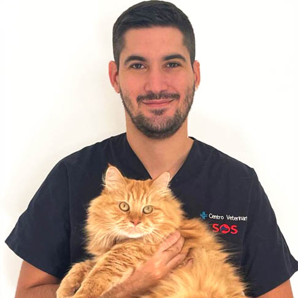
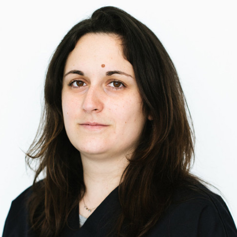

Dott. Luigi Ferrillo
DIRETTORE SANITARIO
Il Dott. Luigi Ferrillo è direttore sanitario di Centro Veterinario SOS di Milazzo e si occupa di medicina interna, ecografia e cardiologia. Nel 2000 si laurea a Parma a pieni voti per poi orientarsi professionalmente verso la medicina interna e la diagnostica per immagini. La sua carriera da medico veterinario inizia nel 2001 presso l'Ospedale Veterinario Roma Sud, dove si occupa - fino al 2003 - di medicina interna, medicina d'urgenza e gestione dei pazienti critici in terapia intensiva. Dal 2003 al 2005 è responsabile di medicina interna e pronto soccorso all'Ospedale Veterinario Città di Pescara. Dal 2005 al 2007 si occupa di medicina interna, pronto soccorso, ecografia addominale e ecocardiografia presso la Clinica Veterinaria Masaccio di Firenze, dove inizia a specializzarsi in diagnostica avanzata per immagini. Dal 2008 è Consulente Tecnico d'Ufficio (CTU) presso il Tribunale di Milazzo. Dal 2011 frequenta a Milazzo, come ospite - la sezione di diagnostica per immagini della Fondazione Poliambulanza Istituto Ospedaliero per approfondire la tecnica. Da Marzo 2016 è Direttore Sanitario del Centro Veterinario SOS. Da Febbraio 2017 è responsabile (incarico avente validità triennale) della gestione sanitaria dell'unità cinofila antidroga della Polizia Locale di Milazzo. Da Novembre 2017 è Direttore Sanitario del Canile rifugio di Milazzo - Associazione SOS Randagi. Da Gennaio 2019 è Direttore Sanitario del Centro Veterinario Val Trompia ( Sarezzo - Milazzo ).
Dott.ssa Pancari Monica
CHIRURGIA GENERALE E MEDICINA INTERNA
Laureata in medicina veterinaria a Parma con votazione 110/110 nel 1990, la Dott.ssa Pancari ha rivolto il proprio interesse professionale verso la medicina interna e la chirurgia generale del cane e del gatto. Direttore sanitario e socio fondatore dell'Ambulatorio Veterinario Pancari - Minelli nel periodo 1995 - 2008, ha successivamente spostato la propria attivita' professionale come associata presso la Clinica Veterinaria S.Emiliano (Milazzo) occupandosi di medicina interna e medicina felina.Da Ottobre 2019 esercita la propria attivita' professionale presso Centro Veterinario SOS Milazzo.

Dott. Claudio Melluso
GASTROENTEROLOGIA, ENDOSCOPIA E PNEUMOLOGIA
Nel 1989 si laurea in Medicina Veterinaria presso l'Università degli Studi di Milano e oggi è consulente presso diversi studi veterinari e cliniche come endoscopista gastroenterologo.E' titolare di un ambulatorio veterinario specializzato nella cura di piccoli animali. Investigatore di molteplici trial clinici in diversi campi di lavoro quali: Parassitologia: (zecche, pulci, vermi intestinali, filaria, acari della rogna) sia nel cane che nel gatto.Medicina interna: antinfiammatori, otalgici, antimicotici, antiacidi. Si è occupato della ricerca sulla presenza e tipizzazione di Helicobacter a livello gastrico nel cane e nel gatto in accordo con l'Università di Medicina Veterinaria di Pisa, dello sviluppo della tecnica per dilatazioni esofagee nel cane e nel gatto con l'impiego dei palloni e di studi sulla correlazione tra istopatologia endoscopica e allergia alimentare e sulla correlazione tra linfangectasia e sua diagnosi endoscopica.

Dott. Angela Valenti
CHIRURGIA ORTOPEDICA E TRAUMATOLOGIA
Si laurea presso l'Università degli Studi di Milano nell'ottobre 2016. Dal 2014 al 2016 - percorso di Internato incentrato su Ortopedia, Traumatologia, e Neurologia dei piccoli animali con affiancamento del prof. Dr. Rocco Lombardo (dipl. ACVIM neurology, ECVN) presso il dipartimento di Clinica Chirurgica dell'Università degli Studi di Milano. A partire da Gennaio 2017 lavora presso diverse strutture in cui svolge attività di medicina interna e chirurgia dei tessuti molli di base Da Marzo 2017 ha iniziato a seguire l'attività chirurgica freelance del Dr. Riccardo Barcucci con il quale collabora attualmente nell'attività specialistica ortopedica, traumatologica e dei tessuti molli. 2018 - 2020 Itinerario didattico di Ortopedia e Traumatologia accreditato ISVPS (SCIVAC) Aggiornamento e perfezionamento nel Dicembre 2018 presso il dipartimento di chirurgia e ortopedia dell'Ospedale veterinario della facoltà di Medicina Veterinaria di Zurigo, seguendo Prof. Dr. A. Pozzi (dipl. ECVS, ACVS e ACVSMR) e Dr F. Massari (dipl. ECVS) Conseguito GPCert (SAOS) Relatore a congressi nazionali di ortopedia e traumatologia degli animali da compagnia. Socio della Società Italiana di Ortopedia Veterinaria (SIOVET) della SCIVAC e Associazione Ortopedica Veterinaria Internazionale (AOVI).